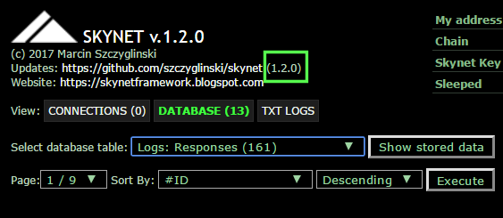

![](
) SKYNET
SKYNET
v.1.2.1 Manual
(c) 2017 Marcin Szczyglinski![]() SKYNET
SKYNETCheck for newest versions here: https://github.com/szczyglis-dev/php-skynet-remote-framework
Project website: https://skynetframework.blogspot.com
FB: Skynet-Framework-441383486200242
- What is Skynet?
- Getting started
- Controlling Skynet
- Request and Response
- Features
- Send/receive parameters
- Send/receive commands
- Self-updating
- Self-cloning
- Sending emails
- Logging events
- Broadcasting
- Sleep and Wakeup
- File transfer
- Remote system shell execution
- Remote PHP code execution
- Registry
- Echo/Ping
- SkynetPeer
- SkynetMonitor
- Debugger
- SkynetClient
- Remote Destroy
- Event Listeners
- Event: onConnect
- Event: onRequest
- Event: onResponse
- Event: onEcho
- Event: onBroadcast
- Event: onConsole
- Event: onCli
- registerCommands
- registerDatabase
- How to create own Event Listener?
- Console
- Compiling Skynet sources into standalone
- Extending & customizing
- Configuration
- CLI mode
- API Documentation
- Updating Skynet
- Contact and donate
BTC: 1LK9tDPBuBFXCKUThFWXNvdcdJ4gzx1Diz
PayPal: https://www.paypal.me/szczyglinski
Version 1.2.1 build 2017.05.01
1. What is Skynet?
Skynet Framework is powerful, easy to use GNU/GPL licensed remote control package and cluster-based network connections builder written in PHP.With Skynet you can create different instances of Skynet (called "clusters") and place them on different servers and then connects with them and sending data between them.
Skynet clusters works on request-response architecture as peer-to-peer clusters. They can connects between itselfs, requesting data, responds for them and more. Skynet have self-replication and self-update mechanisms, so you can clone or update your clusters even by remote easy access. Event-listener architecture implemented in Skynet allows you to create your own Event Listeners with easy to use API and allow you to expand Skynet's capabilities according to your needs. Skynet can operate in two modes - as PHP script administrated by browser and in PHP CLI. Thanks to both of these features Skynet offers console interface for quick and easy commands sending and parameters to other clusters. Skynet clusters work on dynamically created databases based on information from other clusters, requests and responses. Framework also have powerful logging system works on .txt files and database. Skynet is ONLY ONE FILE compiled from source classes (compiler is included). This feature allows you to operate Skynet easily using a single file from any location.
NOTE: Skynet can be some of kind C&C service and can offers powerful possibilites with this. Please do not use Skynet for illegal purposes.
Most important features of Skynet:
- Peer to peer clusters architecture
- Requesting and responding data via internal connections based on easy to use parameters
- Self updating registry about other clusters
- Broadcast mode (clusters to clusters | many-to-many peer-to-peer connections)
- Event Listeners based, easy to extend architecture of API
- It is only one file whitch is compiling from sources (you can extends Skynet by your own methods and compile all into single file)
- Powerful event log system
- Build-in console
- Works in two modes: browser and CLI
- Easy to integration with tools like CRON
- Remote code execution
- Remote shell access
- Remote files transfers
- Administration panel via browser
- PDO multiple database engines support
- Self-update engine (even via remote)
- Self-clone engine (even via remote)
- Easy to extends and customization
- Factory based connections adapters (you can implements you own connection methods, CURL is included)
- Factory based data encryption (you can implements you own algorithms, openSSL and Mcrypt are included)
- Factory based event and logger listeners (you can create your own listeners and data loggers)
- Sending responses via email engine included
- Sleep and wakeup clusters commands included
- Debugger included
- Full API documentation in PHPDOC
- It's all in one
Skynet Framework is under GNU/GPL license, so it's absolutely free to use but if you like it and think that Skynet is helpful to you - you can donate to the project with BTC.
Ok, so let's start with Skynet.
2. Getting started
Skynet Framework actual builds are hosted on GitHub. All you need to do is to download or clone repository and put it on your server.It is preferred to start testing (if you using it at first time) on localhost server. After download and unpack archive or clone repository you will se some files and directories.
2.1. Getting Skynet from GitHUB
Get Skynet from GitHub here: https://github.com/szczyglis-dev/php-skynet-remote-frameworkYou can download or clone repository. Remember that Skynet is still in development, so check sometimes for newest versions.
2.2. Requirements
Skynet Framework requires these components to launch:- Webserver with PHP 5.5+ interpreter
- PDO extension (for databases connections)
- CURL extension (for CURL connections)
- browser with Javascript enabled for ajax-requests in Control Panel
Skynet works on PHP5 and PHP7.
2.3. Skynet files structure
After you download and unpack (or clone) repository from GitHub then you should see files structure of Skynet:- _compiled/ - compiled standalone versions will be placed here by default
- _download/ - folder for downloaded files
- logs/ - log files
- manual/ - manual and API documentation
- src/ - Skynet core, source classes
- skynet_dev.php - Non-compiled Skynet cluster (works on classes from /src directory via autoloader)
- skynet_client.php - Example of Skynet Client (intergration with other applications)
- skynet.php - Compiled Skynet cluster (all classes are compiled into single standalone file)
- compiler.php - Comilater script whitch compiling sources from /src folder into single standalone file
- keygen.php - Skynet Key ID generator
- pwdgen.php - Password hash to Skynet Panel generator
- README.MD - Readme file
- CHANGELOG.txt - Changelog
- TODO.txt - TO DO LIST in next versions
- LICENSE.txt - License
- VERSION - version info
As you see you have two versions of Skynet cluster by default:
- skynet_dev.php - version with autoloader works on classes from src/ directory. You can use this version for development and tests
- skynet.php - compiled version with all classes from src/ directory included itself. This is the "production version" - one single file to put on server after compile from src/
You can work on this two versions (when you launch both you will see that these two works exacly the same at now), but the idea od Skynet clusters is to operate on standalone compiled versions called here "clusters".
You will see also:
- skynet_client.php - Client for Skynet connections. This is a simple example shows how to integrate Skynet with other applications.
2.4. How Skynet works?
An "idea" od Skynet is peer-to-peer based network communication between standalone clusters. You can see one of that created clusters in downloaded repository - it's called skynet.php.You can create many clusters like that and then connects them with theirselfs. At the beginning you can simple copy skynet.php to another file, e.g. skynet2.php - if you do this you will have two Skynet clusters.
At next, you can create more, e.g. skynet3.php, skynet4.php, etc. Finally you can put them on different servers if you want. All of there standalone clusters will build your network.
At first launch of every cluster, Skynet will build database (SQLite is default and is recomennded). Every cluster creates their own database file named .CLUSTER_NAME.db (if SQLite is used). Of course you can use antother database engine (e.g. MySQL) and then Skynet will work on database like that, but SQLite is preferred. This is the idea: one cluster + one database file. From now, Skynet will store data about another clusters in their own database. This clusters list will be at next sended to another registered clusters so clusters knowed by one cluster will be shared with another cluster and added to their database. Every cluster will know about other clusters, that's the idea of this network.
When at least one another cluster is knowed by your cluster you are allowed to share data and commands between them. Sending data between clusters is based on request-response architecture: one cluster sends request to another, and the another creates response from request then returns it to requesting one. With more that one cluster those requests and responses can be sending over whole network. Skynet resends information about knowed (registered) clusters to anothers when connects to them, so if you have 3 clusters, e.g. skynet1.php, skynet2.php, skynet3.php you need to connect them each other at first. How to do this? When you connect first cluster with second cluster at first time the second cluster will get and store address of first cluster in their database and the first cluster will store address of second cluster. At now, if you connect second cluster with cluster number three, the cluster numer three will get (and store) address of second cluster... and the first cluster. It's not the end, becose after that, cluster number three will connect with first cluster and sends them their address. At now, every clusters will "see" each other. If you then add another - four cluster and connect to it from cluster one - all of clusters will receive information about new cluster (becose cluster one will inform them).
When Skynet knows about another clusters then starts broadcasting to all of them and allows to sending them requests (addressed to specified clusters, or adressed to whole network) and receiving responses from them. Every cluster is a sender and responder at once, so communication is in two-sides. Every request can have prepared parameters and commands specified by cluster or by user (and other cluster can responds for them with defined action).
2.5. First launch
If you have unpacked repository from GitHub put all of files from it on your localhost (or other) server, e.g. localhost/skynet/ and then launch in your browser:http://localhost/skynet/skynet_dev.php
(non-compiled developer version)
or
http://localhost/skynet/skynet.php
(compiled version)
At now you will see the same on both of them - Skynet Control Panel:
This panel displays informations about Skynet status and connections to another clusters. This panel also allows you to easy browse stored in database connections logs.
As you see, Skynet is not connected to any cluster and shows you 2 warnings - about empty password and empty SkynetKeyID. By default, after you download Skynet these two fields are set to start values - you will need to configure them itself. We will do this at the end.
At first, let's try to connect clusters included in Skynet package.
In console at the bottom of window of Skynet Control Panel type:
@connect "CLUSTER_ADDRESS";
where CLUSTER_ADDRESS will be second cluster (http://localhost/skynet/skynet.php if you're in /skynet_dev.php and http://localhost/skynet/skynet_dev.php if you're in /skynet.php)
At next, click on "Send request" button.
You should see information about connection with second cluster and the second cluster address should be stored into database.
Good. Now you have two working clusters. Let's try to create different clusters, e.g. by copying skynet.php into skynet2.php, etc. and try to connect with them.
At the end, let's try to generate SkynetKey ID - this is the unique identifier of your clusters network. All of your clusters must have SAME KEY ID to allow connections between them. For security reasons Skynet cluster is checking this key in every connection. If requested key not match to cluster key then response is not generated.
To generate your Key, launch key generator included in package:
http://localhost/skynet/keygen.php
This keygen generates randomly key in every launch. When you generate your key, place it into your Skynet config file:
/src/SkynetUser/SkynetConfig.php
and in:
/skynet.php
if you launched compiled version (remember that after compiling all configuration data from /src are includes into standalone file)
Put KEY ID into:
const KEY_ID
(default here is: 1234567890, replace it with your Key)
Now, let's go to admin password hash generator. This password is using for accessing to your Skynet Control Panel. By default, this password is not set, so you must create one.
Skynet needs hash of the password, not the plain text of it. To generate password hash go to:
http://localhost/skynet/pwdgen.php
Put your password into input, click on "Generate hash" and place generated hash into config file (/src/SkynetUser/SkynetConfig.php) and into compiled version.
const PASSWORD
Ok, let's back to your Skynet Control Panel:
http://localhost/skynet/skynet_dev.php
or
http://localhost/skynet/skynet.php
You should now see request for password. Log in with it.
At now, you have simple preconfigured Skynet.
REMEMBER: All of your clusters MUST SHARE the same Skynet Key ID.
3. Controlling Skynet
When you launch Skynet via webbrowser you will see Skynet Control Panel. This is the front-end of Skynet. By default, no admin password is set - you must define password hash and place generated hash into config file if you want secure access to Control Panel. At first launch you will see a monit about empty password and information about password hash generation. With Skynet Panel you can control your Skynet - sending requests, receiving resonses, sending commands and checks cluster status. Every cluster has its own Control Panel, so you can control every Skynet Cluster by opening it in webbrowser. Skynet Panel is also a debugger for your Event Listeners - with section "Debug" you can debug your code - informations about debugger are in "Features: Debugger" documentation section. You can also control Skynet by CLI Mode - usage of CLI mode is described in "CLI Mode" section.skynet.php or skynet_dev.php
3.1. Control Panel overview
Skynet Control Panel can work in 3 modes: connections view, database view and text logs view.You can switch between this two views by switching buttons at the top right corner of Skynet Panel (CONNECTIONS | DATABASE | TXT LOGS).

In connections view you can sending requests, receiving responses and controls all of data. In database view you can view, edit and delete records stored in Skynet's database like logs, clusters list, options, registry and more.
Connection View
Connection View has 6 sections:
- Cluster summary informations (1)
- Connection mode controller (2)
- Clusters list (3)
- Status and debugger (4)
- Webconsole (5)
- Connection Data (6)
1) Cluster summary informations
This section shows clusters summary and most important informations about actual clusters.
- My address - cluster address
- Chain - actual chain value (in every connection chain value is incrementing) and time of last update
- Skynet Key ID - your Skynet Key ID
- Sleeped - information about Cluster state - sleeped cluster not sends requests and not generates responses
- Cluster IP - cluster (server) IP address
- Your IP - your IP address
- Encryption - data encryption method (default: OpenSSL)
- Connections - connections provider (default: CURL)
- Broadcasting clusters - number of actual broadcasting clusters
- Clusters is DB - number of stored in database connections
- Connections attemts - number of actual connections
- Successful connections - number of finished actual connections
2) Connection mode controller
This is the switch between connections modes. Every Skynet cluster can be in 3 different states:
- Idle - when no connections are sending
- Single - when you connects to single clusters
- Broadcast - when you connects to all clusters stored in database at once
You can switch between modes by clicking on one of this modes - Skynet will connect and show connection data in "Connection Data" section (6).
Connection will be executed via ajax request, so when you change mode Control Panel will not be refreshed and all data will be sent "on fly".
3) Clusters list
This is the clusters list stored in database.
When you connects to cluster or another cluster is connects with your cluster then Skynet stores other cluster address in database.
Every cluster entry has 4 fields:
- Status (A) (colored square on left whitch shows actual state: GREY icon - idle, GREEN icon - connected, RED icon - connection error
- Address (B)- this is the cluster remote address (you can click on address to launch its Control Panel)
- Ping (C) - ping in miliseconds (if there is no connection then 0 wil be shown)
- Connect button (D) - if you click on "CONNECT" then command for connect to selected cluster will be placed in webconsole and next if you send this command via "Send request" then single connection with cluster will be executed.
4) Status and debugger
You have 6 tabs here:
- States - this is the cluster states list generated by Skynet (every part of Skynet can generate its own state). This is a simple info about status of different parts of Skynet
- Errors - when errors occurs then it will be shown in this tab. If there is no errors then list will be empty
- Config - list of all config values placed in your config file
- Console - if you sending commands from webconsole then commands output from console will be shown here
- Debug - output of debugger (debugger usage is described in section "Feature: Debugger")
- Listeners - informations about Event Listeners (Listners / Loggers). Your custom listeners are marked here by green colour.
In green window you will see Skynet Monitor output.
You can switch between tabs by clicking on Tab name.
All of data placed here are updated via Ajax when you are connecting to other cluster, so data here is always actual.
5) Webconsole
This is a webconsole for sending commands and requests.
You can send commands and parameters from here by typing commands and click on "Send request" button.
At the top of webconsole a shortcuts list to commands given from listeners is placed. When you will choose a command from this list then command will be placed in console window.
You can define command placed here in your own listeners (more about this is in "registerCommands" section.
6) Connection Data
This is the output from connections. All of data placed here are generated via ajax-requests "on fly".
There is 3 tabs:

- Plain data - displays all of data (params, commands, etc.) in plain text
- Encrypted data - displays the same data but encrypted (Skynet sends encryted data, so you will see here how your encrypted fields looks like in connection)
- Raw data - displays raw data whitch is sending and receiving from cluster.
Connection fields are splitted into sections:
- Cluster Info - information about connected cluster
- Request Fields {sended} (plain) - raw requested to cluster fields
- Response Fields {received} (decrypted) - encrypted fields from cluster response
- Request Fields {sended} (encrypted) - encrypted requested to cluster fields
- Response Fields {received} (raw) - raw fields from cluster response
- SENDED RAW DATA - raw sended data packet
- RECEIVED RAW DATA - raw received response packet
All "_" and "@_" prefixed parameters are internal Skynet parameters (if not translated fields are displayed).
Connection data is built from 2 parts: request and response.
Request fields are fields whitch are sended to other cluster when connection is executed.
Response fields are fields whitch are received from other cluster when connection is executed.
All of both parts are built from parameters and commands list - every field is a pair "key=value".
Most of this parameters are intenal Skynet parameters like cluster address, version, time, key, etc.... You can disable internal parameters display by disabling it in config file.
When you connects on "broadcast mode", or by defining more than one receiver then all of connections data will be shown here and its will be numered by "@Connection 1,2,3, etc...".
If there will be an error with receiving response then no data will be shown here.
At the top of connections you can see form to setting connection interval.
If value greather than "0" is set then interval will work and Skynet will auto-relaunchs connections "on fly".
From here you can also set below options:
- Display internal params - if YES then internal Skynet parameters (like Skynet ID, time, hash, etc.) will be displayed
- Display @echo - if YES then interal @echo returned parameters will be displayed (Skynet attachs requests fields to response and prefix them by @ - you can disable this option in config file)
In left top corner you can also Logout from Panel and change colour theme (default is "dark"):
Database View
In this view you have access to Skynet's database. Every cluster has its own database created dynamicaly in cluster directory (if SQLite database type is choosen).
You have access to all of database tables and records here. Records can be edited and deleted from here (expect "Chain value" record).
At the top of window tables list is placed. You can choose a table from here and then when you click on "Show stored data" all records will be show.

You can sort records by fields in defined order by change options in form. Records are paginated, so you can choose actual page via "Page" list and click "Execute".
To delete all records in actual table click on the "DELETE ALL RECORDS" button.
Every record has 3 buttons:
- Generate TXT - generates .txt file from choosen record
- Edit - opens record for edition
- Delete - deletes choosen record from database

You can define and create you own tables in Event Listeners (more info about it is in "registerDatabase" section).
By clicking on "New record" button you can put new record into table manualy.

- Clusters - stores clusters list
- Clusters (corrupted/blocked) - stores clusters with connection problems (when Skynet cluster not responds then Skynet marks it as corrupted)
- Registry - stores registry options`
- Options - stores configuration
- Chain - stores actual chain value
- Logs: user logs - stored user logs
- Logs: Responses - stored responses
- Logs: Requests - stored requests
- Logs: Echo - stored echo commands
- Logs: Broadcasts - stored broadcast commands
- Logs: Errors - stored errors
- Logs: Access Errors - stored security errors (unathorized access to Panel and incorrect KEY ID in connections)
- Logs: Self-updates - stored update procedures
Information about newest versions
At the top left corner after link to GitHub Skynet displays information about newest version available on GitHub. You can disable new versions check in config file.

TXT Logs View
This view allow you to browse generated by Skynet txt log files. In this panel you can browse, read, and delete logs saved in your logs directory.
By default, Skynet displays all stored logs:
When you will click on filename then log will be open in new window.
You can also delete specified logs by clicking on "Delete" button.
If you want to display logs only from specified event you can choose Event from list:
If you choose option from list then Skynet will display only logs matches to pattern.
As you see table is splitted by columns - Skynet parses this data from filenames whitch are generated by special pattern.
Thanks to that you can easy reads your logs finding files by fields:
- Filename - log filename
- Time - generation time
- Event - event type
- Context - information if log was saved when request/response was sended or when was received
- Cluster - cluster address whitch generated log file
Logs created when sending data are marked by green colour.
You can also delete all log files by clicking on "Delete ALL TXT FILES" - when button will be clicked on "All" files then all files will be deleted.
If it will be clicked when only specified event logs are displayed then only these files will be erased.
3.2. Connection Modes
By default, when Skynet object is started with parameter "true" then Skynet starts in broadcast mode.Skynet has 3 different modes:
1) Idle
When idle mode is set then Skynet not sends any data and there is no connections creates to another clusters.
You can set "Idle mode" by clicking on "Idle" button at the top of clusters list window, below the Skynet's logo.
When you will send command in idle then no connection will be executed (expects @connect command).
2) Single
When you are connecting to specified cluster address then Skynet will be connect only to it and there will be no connections to others clusters.
Every data sended in this mode will be send only to specified cluster. If there will be an error with connection then Skynet will change its mode to "Idle".
3) Broadcast
In "broadcast" mode every commands and parameters are sended to ALL clusters stored in database.
Status of every connection is shown by colour icon on clusters list. When connection is succesful and response data is received then green icon will be shown.
If any connection error will occur then icon will change colour to red. If there is no connection with specified clusters then icon will be in grey colour and "Ping" value will be set to "0".
Most od Skynet commands can works in different modes:
- me - command is executes only on your cluster, e.g.:
@sleep me
will sleep only your cluster and data will not send to others clusters.
@sleep "all"
will send @sleep command to all clusters stored in database.
@sleep "address"
will send @sleep command only to cluster with "address" address.
When you sending parameters without addresses specified, then paremeters will be send to all clusters in broadcast mode, e.g.:
foo:"bar"
will send parameter foo with value bar to all cluster stored in database when you are in broadcast mode.
When Skynet connects with another cluster then stored in database clusters list is attached to request - if connected cluster has no any cluster sended in request then its clusters list will be updated with new one.
In second way - when respone has clusters in its list whitch you not have in databae then your clusters list will be updated with new one.
You can "exit" from broadcast mode when sending parameters by setting "@to" command:
foo:"bar";
@to "address";
When Skynet is connected to other cluster then "favicon" of Control Panel is set to green.
Default mode you can set in config file by changing option:
$config['core_mode']
Possible values:
- 0 - Idle
- 1 - Single
- 2 - Broadcast
4. Request and Response
Skynet works on request-response based architecture. After sender sends request to responder, responder reads request and generates response for it. Every request is authorized by user-defined Skynet Key ID - unique for every clusters network. Inside code - request is a list of parameters and commands. Those parameters can be set by code (e.g. by Event Listener) or 'handly' via built-in console or command line in CLI mode. Second part is response - an object whitch is generated when request arrives. Response can be generated with built-in in Skynet or created by user Event Listeners. Communication request-response can be estabilished for cluster to cluster connection or via whole clusters network in broadcast mode. Every Skynet cluster is sender (server) and responder (client) at once.In code, those 2 objects are available as:
use Skynet\Data\SkynetRequest;
$request = new SkynetRequest();
and
use Skynet\Data\SkynetResponse;
$response = new SkynetResponse();
In Event Listeners by easy to use:
$this->request
and
$this->response
Every Event Listener has access to them and can manipulate sended/received via those objects data.
4.1. Request
Request object creates, parses and manipulates on sending to another cluster data. This object offers easy access to all fields sending to another clusters. Every of those fields are params with pairs "key:value" whitch can be receive by another cluster and assigned to their request object. Skynet has some default built-in Event Listeners works on requesting and requested data and you can easily create your own listeners. By the way, this is an idea of Skynet - to create listeners and work with them under framework.Look at an example:
Code below creates new request object and sets field called 'foo' with value 'bar':
use Skynet\Data\SkynetRequest;
$request = new SkynetRequest();
$request->set('foo', 'bar');
Code below will receive value of field 'foo' from request object:
$foo = $request->get('foo');
This is the simpliest usage and it's operates on one single key:valuerequest field.
With Skynet you can create more specified fields as arrays of params. Code below creates an array of two parameters in single request:
use Skynet\Data\SkynetRequest;
$request = new SkynetRequest();
$request->set('foo', array('key1' => 'bar1', 'key2' => 'bar2'));
At next, you can receive array like that by:
$foo = $request->get('foo');
$key1 = $foo['key1'];
$key2 = $foo['key2'];
If a request field is not set then:
$foo = $request->get('FIELD_KEY');
always returns NULL, so you can use this to check if any field exists in request, like below:
if($request->get('FIELD_KEY') !== null)
{
/* do something */
}
Code above sets single parameter (imagine that this is a single variable) whitch will be send to clusters, but you will also use Skynet to sending commands (they are documented in next sections).
Commands can take more that one parameter per command, e.g. if you using command @opt_set then you can specifiy more that one field to one command.
Take a look at example:
use Skynet\Data\SkynetRequest;
$request = new SkynetRequest();
$request->set('@reg_set', array('key1' => 'bar1', 'key2' => 'bar2');
And now:
key1:"bar1" and key2:"bar2"
are still a single parameter. So, with Skynet you can send more parameter where every parameter is an array, let's see an example:
use Skynet\Data\SkynetRequest;
$request = new SkynetRequest();
$param1 = array('key1' => 'bar1', 'key2' => 'bar2');
$param2 = array('key3' => 'bar3', 'key4' => 'bar4');
$request->set('@reg_set', array($param1, $param2);
Every parametr can be set from 3 different ways:
- in PHP code (as above)
- via webconsole
- via CLI mode
Code above is equals to setting parameters from webconsole, e.g.:
key1:"value1";
key2:"value2";
and equals to the same in CLI mode:
php skynet.php -b -send "key1:'value1'; key2:'value2';"
The Request object works in 2 ways:
- on "sender" side you are using request object to create request witch will be send to other clusters
- on "receiver" side cluster receives request from sender and operates on sended data by own request object just like above.
So, if you sets a field called foo on sender cluster:
use Skynet\Data\SkynetRequest;
$request = new SkynetRequest();
$request->set('foo', 'bar');
After send this request to receiver then receiver will be have access to field foo by own request object:
use Skynet\Data\SkynetRequest;
$request = new SkynetRequest();
$foo = $request->get('foo');
You will see more about using Request in Event Listeners section.
At this time you should know that in Event Listeners you have simpliest access to request object by:
$this->request
When request is prepared (it can have lot of fields, above we are only sending one for an example) then you can send request to one specified cluster or whole clusters network.
4.2. Response
Response objects creates and manipulates on response for received requests. After cluster receives request from another cluster response object creates and prepares response depends on received in request parameters or commands.When preparing response for request Skynet launch Events Listeners whitch can add their own fields to response. Returned by response fields are received by request sender and available in its own response object.
In code, the response object is creating this way:
use Skynet\Data\SkynetResponse;
$response = new SkynetResponse();
Look at an example:
Code below creates new response object and fills field called 'foo' with value 'bar':
use Skynet\Data\SkynetResponse;
$response = new SkynetResponse();
$response->set('foo', 'bar');
Code below will receive value of field 'foo' from response:
$foo = $response->get('foo');
Let's see how it works:
Sender cluster sends a prepared request to another cluster sending field 'foo' to it:
On request sender cluster side:
use Skynet\Data\SkynetRequest;
$request = new SkynetRequest();
$request->set('foo', 'bar');
Request above is sending to receiver cluster, at next the receiver cluster gets field 'foo' from own request object.
On request receiver side:
use Skynet\Data\SkynetRequest;
$request = new SkynetRequest();
$foo = $request->get('foo');
And now, the receiver can prepare response for this request, e.g.:
On request receiver (and response sender) side:
use Skynet\Data\SkynetRequest;
use Skynet\Data\SkynetResponse;
$request = new SkynetRequest();
$response = new SkynetResponse();
if($request->get('foo') == 'bar')
{
$response->set('bar', 'foo');
}
At next, response is received by request sender and request sender have access to this response by own response object:
On request sender (and response receiver) side:
use Skynet\Data\SkynetResponse;
$response = new SkynetResponse();
if($response->get('bar') == 'foo')
{
/* do something */
}
The Response object works in 2 ways:
- on "receiver" side cluster generates response for request from sender cluster
- on "sender" side response is received and request sender can get data from this request received from response sender via own response object
In Event Listeners you will be using response object via:
$this->response
Response is preparing once when request arrives and response for it is generated.
You can generate response only from code via Event Listeners.
5. Features
Skynet has lot of features. In this section you will read about most important of them.5.1. Send/receive parameters
Most basic (but most important) feature is remote sending and receiving parameters by request and response objects - everything in Skynet is controlled by this.With Skynet you can setting single parameters like:
foo:"bar";
or more at once:
foo:"bar1";
foo2:"bar2";
foo3:"bar3";
All parameters sending and receiving by Skynet are encrypted by default. You can disable data encryption in config file (not recommended) or implements you own algorythms for encryption (at default only simple base64 is included). All of parameters are sending by one single request (or response) - Skynet is packing them into one packet. How it works?
You can set parameters by three different ways:
- from PHP code via Event Listeners
- from webconsole
- from CLI
Sending parameters from Event Listener:
Let's imagine that we have 2 clusters: skynet1.php and skynet2.php and skynet1.php must send information about foo to skynet2.php.
To do this, skynet1.php must prepare request to be send, sets parameter (field) and assign to them value with time and sends prepared request to skynet2.php
Skynet use special classes called Event Listeners for operating on requesting and receiving data, so all we need to do is to assign our parameter foo to event:
onRequest()
This event is launches two times on both sides - when request is creating (on sender cluster) and when request is received (on receiver). As you see, every event is fired 2 times in 2 different context - as sender and as a receiver.
This two contexts are named in Skynet as:
- beforeSend
- afterReceive
Information about actual context is getting as argument in every event.
Depends on this information you can prepare code for 'sender side' and for 'receiver side'.
To prepare request (on sender cluster) with our parameter foo we must use context "beforeSend", becose this context is used when request is under preparation.
http://someserver.com/skynet1.php or http://someserver.com/src/SkynetUser/MyListener.php:
public function onRequest($context)
{
if($context == "beforeSend")
{
$this->request->set('foo', 'bar');
}
}
That's it. We creates new parameter (field) called foo and set this to bar.
Request will be send when Skynet will be broadcasting another clusters (or via single connection if you specify it). Sended parameter will be available on receiver cluster request object from context afterReceive:
http://anotherserver.com/skynet2.php or http://anotherserver.com/src/SkynetUser/MyListener.php:
public function onRequest($context)
{
if($context == "afterReceive")
{
$foo = $this->request->get('foo');
}
}
And now the receiver cluster can prepare response for request above. We will use for that onResponse() event witch works in two context too:
http://anotherserver.com/skynet2.php or http://anotherserver.com/src/SkynetUser/MyListener.php:
public function onResponse($context)
{
if($context == "beforeSend")
{
$foo = $this->request->get('foo');
if($foo !== null)
{
$this->response->set('thanks', 'Thank you!');
}
}
}
That's it. Request receiver (skynet2.php) will now respond with parameter (field) thanks setted to Thank you!.
Now, when a request sender cluster (skynet1.php) receives the response, parameter thanks will be available in its response object in context afterReceive:
http://someserver.com/skynet1.php or http://someserver.com/src/SkynetUser/MyListener.php:
public function onResponse($context)
{
if($context == "afterReceive")
{
$responseThanks = $this->response->get('thanks');
if($responseThanks !== null)
{
/* Nice. */
}
}
}
If you want to specify only one cluster receiver when preparing request you should use command:
@to "CLUSTER_ADDRESS";
Example for specify skynet2.php cluster as only receiver of our request:
http://someserver.com/skynet1.php or http://someserver.com/src/SkynetUser/MyListener.php:
public function onRequest($context)
{
if($context == "beforeSend")
{
$this->request->set('foo', 'bar');
$this->request->set('@to', 'http://localhost/skynet/skynet2.php');
}
}
The @to command specifying receiver cluster. Only this cluster will receive prepared request as above.
Another way is to send parameters via webconsole and CLI mode - those two methods are described more complexed in section "Console & CLI Mode".
Sending parameters from webconsole:
If you want send parameter via webconsole type:
param:"value";
and click on "Send request".
In our case this could be, e.g.:
foo:"bar";
Remember that if you sending more than one parameter via webconsole, you must set every parameter in new line and separate them by ";", e.g.:
foo:"bar";
foo2:"bar2";
foo3:"bar3";
Then when you click on "Send request" three parameters (fields) will be send in single request.
All parameters values should be quoted by ["] char.
Sending parameters from CLI mode:
In PHP CLI mode, when you launch Skynet this way you will need to use:
php skynet.php -send "foo:'bar'; foo2:'bar2';"
5.2. Send/receive commands
Skynet commands are special types od parameters. They are requests for some kind of action to be executed. Commands are similar to parameters but prefixed by "@".Every parameter with name prefixed that is interpreted by Skynet as a command. Commands can take parameter (or parameters) and can be call from PHP code (via Event Listeners) or via webconsole or command line in CLI mode.
Let's look at the example.
In previous section we was sending parameter foo to skynet2.php cluster. We defined receiver cluster by:
@to
This parameter is one of the commands in Skynet.
With command you can send to another clusters a request to execute specified by command action, like set value in database, or launch any other action. You can define actions for received commands in Event Listeners:
/src/SkynetUser/MyListener.php:
public function onRequest($context)
{
if($context == "afterReceive")
{
if($this->request->get('@COMMAND_NAME')
{
/* do something */
}
}
}
where @COMMAND_NAME is name of command sended by:
$this->request('set', '@COMMAND_NAME');or
@COMMAND_NAME
in webconsole.
Special type of commands is:
return
It's not called "return", but its called by single "@" char.
When parameter returned with response is prefixed by "@" and not "@<<" that is exacly the echo command. This command do nothing but returns parameters sended in request. You can disable this option (include sended data in response) in config file.
Another special type od command is "Skynet control parameter".
Those commands are prefixed by "_skynet" (not by "@") and controls connection params.
You should not use prefix _skynet in your own defined parameters and commands becose this prefixes are reserved for Skynet internal core.
Commands can take arguments, e.g. when you're setting receiver cluster address by:
/src/SkynetUser/MyListener.php:
$this->request->set('@to', 'CLUSTER_ADDRESS');CLUSTER_ADDRESS is here an argument of command @to.
If you want to specify argument by webconsole, you must add it after space, e.g.:
@to "CLUSTER_ADDRESS";
(press "Send request")
You can pass multiple arguments to some commands by separating them with coma -"," e.g.:
@connect CLUSTER_ADDRESS1, CLUSTER_ADDRESS2, CLUSTER_ADDRESS3;
(clusters addresses without quotes)
Usage in CLI is similar to defining parameters:
-send "@connect CLUSTER_ADDRESS1, CLUSTER_ADDRESS2, CLUSTER_ADDRESS3;"
You will find full commands list in section "Skynet Commands". Of course you can (and you should) define your own commands in your own Event Listeners to extends Skynet for functionality as you need.
5.3. Self-updating
Event Listener: Skynet\EventListener\SkynetEventListenerUpdaterSkynet has built-in function for remotely self-updating its own PHP source code. When you send to clusters the @self_update command, all clusters whitch receive this command will launch update procedure. When you are sending @self_update command you must specify location of skynet cluster with new code. When updating, cluster will connect with it. At next, cluster with new source code will show their code and destination clusters will read this code and replace own code with it. How it works?
Let's imagine that we have two Skynet clusters in two different locations: skynet_old.php and skynet_new.php.
E.g.:
http://localhost/foo/skynet_old.php
and
http://localhost/bar/skynet_new.php
When skynet_old.php is your old file with some code and skynet_new.php is the newest compiled version (e.g. with new functions whitch you build-in) you can send request to all old clusters from this new one (or from another cluster). Example: if you'll send @self_update command from skynet_new.php to remotely placed skynet_old.php and specify skynet_new.php as source for updating procedure then skynet_old.php will connect with skynet_new.php and ask it for show its own code. At next, skynet_new.php will show it own source code and old cluster will get this. Finally, skynet_old.php will replace own code with this new one. Of course, you can send @self_update command to more than one cluster at once. If you do this then all older clusters will update with new one. You can do this, even if other clusters are on different servers with this one command: @self_update.
When sending @self_update command you need specify address to cluster witch is source with new PHP code. After updating, clusters whitch was updated will response with update result:
You will see parameters in response:
@<<self_update_success
or if any errors occurs:
@<<self_update_error
with update procedure results.
Parameters:
source - source address to cluster with new code
Usage (PHP code):
You can send @self_update command from event listener:
/src/SkynetUser/MyListener.php:
public function onRequest($context)
{
if($context == "beforeSend")
{
$this->request->set('@self_update', array('source' => 'ADDRESS_TO_SOURCE_CLUSTER'));
}
}
When ADDRESS_TO_SOURCE_CLUSTER is address to cluster with new code, in our case this is:
http://localhost/bar/skynet_new.php
So, command above will update all clusters with code of this one.
By default, command sended like that will be send to all clusters, e.g.:
http://localhost/foo/skynet_old.php
http://localhost/foo2/skynet_old.php
http://localhost/foo3/skynet_old.php
http://localhost/foo4/skynet_old.php
If you need to update only one specified cluster you must use @to command, e.g.:
/src/SkynetUser/MyListener.php:
public function onRequest($context)
{
if($context == "beforeSend")
{
$this->request->set('@self_update', array('source' => 'ADDRESS_TO_SOURCE_CLUSTER'));
$this->request->set('@to', 'ADDRESS_TO_OLD_CLUSTER');
}
}
When ADDRESS_TO_OLD_CLUSTER is an address to cluster you want to update.
Usage (webconsole):
@self_update source:"ADDRESS_TO_SOURCE_CLUSTER";
Command specified like that will send request to all clusters.
To specify one cluster as a receiver you add @to command:
@self_update source:"ADDRESS_TO_SOURCE_CLUSTER";
@to "ADDRESS_TO_OLD_CLUSTER";
Usage (CLI mode):
php skynet_new.php -b -send "@self_update source:'ADDRESS_TO_SOURCE_CLUSTER'"
or
php skynet_new.php -b -send "@self_update source:'ADDRESS_TO_SOURCE_CLUSTER'; @to 'ADDRESS_TO_OLD_CLUSTER'"
All updates results are put logs into database and text logs (if enabled).
You can see this logs in DATABASE VIEW and in your logs folder.
After update procedure all clusters will have THE SAME source code as source.
Self-update procedure is executes on destination clusters in onResponse (beforeSend) event.
BE CAREFUL WHEN UPDATING: If you accidentally send wrong source or source with errors it is possible to loose connection with clusters. Update only with fully stable and tested compilations.
NOTE: When updating remote cluster then connection with updating cluster can be refused for a while and no response will received.
5.4. Self-cloning
Event Listener: Skynet\EventListener\SkynetEventListenerClonerSelf-cloning is functionality whitch allow Skynet to clone itself to another locations. By default this option is disabled in config - if you want to use this you must enable it in your config file.
Configuation file is placed in:
/src/SkynetUser/SkynetConfig.php
If you want to enable clone function just set to TRUE option below:
$config['core_cloner']
When @clone command is sent to clusters then every cluster will try to scan all subdirectories where cluster is placed and try to copy to them. After that (if successed) - clusters will broadcast information about new clones on the network to register new ones by other clusters.
At first, you should test this option by localhost.
Just create directory (and subdirectories in it) when cluster is placed. After that, launch your cluster with command:
@clone me;
Just type command above in webconsole and 'Send Request'.
Your cluster should be cloned into all directories in its location, and at next - a new clones should be cloned itselfs into next subdirectiories, and so one...
To remotely send @clone command to other clusters, type in webconsole:
@clone "CLUSTER_ADDRESS";
or
@clone CLUSTER_ADDRESS1, CLUSTER_ADDRESS2, CLUSTER_ADDRESS3...;
(clusters addresses without quotes)
or with argument "all" (or without any arguments) to send command to all clusters.
In Skynet every command typed without parameters is sending to all clusters by default.
Analogously, you can send command in Event Listener:
/src/SkynetUser/MyListener.php:
public function onRequest($context)
{
if($context == "beforeSend")
{
$this->request->set('@clone', 'all');
}
}
Be careful with using this option, becase if you call @clone then Skynet will replicate to ALL directories where it placed.
5.5. Sending emails
Event Listener: Skynet\EventListener\SkynetEventListenerEmailerSkynet has built-it method for sending responses from clusters to specified email address by using PHP's sendmail. When sending emails option is enabled then email is sending every time when response is created on server that create response (or if response is generated from code and e.g. launching from CRON). By default, there is no specified email address of receiver in config file (default address is set) - you must specify email address itself in:
/src/SkynetUser/SkynetConfig.php
by placing your email address in:
$config['emailer_email_address']
After that, if an email address is specified you must enable sending emails on cluster. You can do this by setting Skynet registry option email to value 1.
To enable sendmail option on cluster, type in webconsole:
@opt_set email:"1";
This will enable email sending for all clusters in network.
If you want to enable option only on specified cluster you must mixed this option with command @to, like that:
@opt_set email:"1";
@to "CLUSTER_ADDRESS";
(remember about separate commands with coma ";" and press "Send request")
To disable email sending set option to "0".
Sended emails are also logged in database and text logs (if enabled).
5.6. Logging events
Loggers are offered from: Skynet\EventLoggerSkynet has complex logging system. It stores events logs (includes requests, responses and more) in two different places - as text files on server and in database.
By default, both of these options are enabled but you can disable/or enable them into your config file.
Text files logs are stored in specified in config file location (default is: /logs).
In database, you will see all of your stored data by switching your View Mode in Skynet Control Panel to Database View.
Records with logs can be removed by clicking on Delete button or you can erasing all records by one click via Delete all button.
You can easy generate .txt files from specified records by clicking on Generate TXT button on record.
Text file logs can be viewed via Control Panel also by switching view to TXT LOGS mode.
Creating custom logs
You can create custom logs simply in your Event Listeners.
In your listener just use method:
$this->addLog($message);
where:
$message is string value with any text message.
By method above a log will be saved into database and into text file in your logs folder.
Example:
/src/SkynetUser/MyListener.php:
public function onResponse($context)
{
if($context == "afterReceive")
{
$this->addLog('1..2...3...Response received');
}
}
Code above will save log with message "1..2...3...Response received".
You can use $this->addLog() in every place of your Event Listener.
All custom logs created by method above are stores in database table:
skynet_logs_user
and into logs directory with pattern:
{LOGS_DIR}/{TIME}_log_{CLUSTER_ADDRESS}_{NUMBER}.txtEvent Loggers are based on factory design so you can create your own logging system and register it into Skynet.
Loggers factory is placed in class:
/src/Skynet/EventLogger/SkynetEventLoggersFactory.php
You can register custom loggers here:
/**
* Registers Event Loggers classes in registry
*/
private function registerEventListeners()
{
$this->register('emailer', new SkynetEventListenerEmailer());
$this->register('databaseLogger', new SkynetEventListenerLoggerDatabase());
$this->register('fileLogger', new SkynetEventListenerLoggerFiles());
}
Every custom Event Looger must extends abstract class:
SkynetEventListenerAbstract
and implements interface:
SkynetEventListenerInterface
Loggers are executes at the end of code after the Listeners.
Database logs
Every Skynet cluster uses it own database to store database logs.
At default, Skynet creates tables above to store logs:
- Logs: user logs [skynet_logs_user] - stores user log
- Logs: Responses [skynet_logs_responses] - stores responses
- Logs: Requests [skynet_logs_requests] - stores requests
- Logs: Echo [skynet_logs_echo] - stores echo commands
- Logs: Broadcasts [skynet_logs_broadcast] - stores broadcast commands
- Logs: Errors [skynet_errors] - stores errors
- Logs: Access Errors [skynet_logs_access_errors] - stores security errors (unathorized access to Panel and incorrect KEY ID in connections)
- Logs: Self-updates [skynet_logs_selfupdate] - stores update procedures
Text logs
Text logs are stored in specified in config file directory.
You can set directory for logs by setting option:
$config['logs_dir']
in your config file in /src/SkynetUser/SkynetConfig.php
Every log file is creating by pattern:
{LOGS_DIR}/{TIME}_{EVENTNAME}_{CLUSTER_ADDRESS}_{NUMBER}.txtLogging specified events can be configured in config file by setting options:
$config['logs_txt_{EVENTNAME}']to TRUE or FALSE.
NOTE: Remember that every event is logged, so your logs directory may includes lot of files after longer time. You should delete old, unused logs every once in a while.
5.7. Broadcasting
Skynet can work in two different modes: as single connection cluster-cluster or in broadcast mode (peer-to-peer). When Skynet is in brodacast mode all of clusters are broadcasted every time when Skynet is launches.By default, every cluster starts by code below:
$skynet = new Skynet(true);
$service = new SkynetResponder(true);
in
SkynetLauncher()
Parameter TRUE in Skynet() constructor starts broadcast mode and renders output (setting this to FALSE will not starts broadcast automaticaly). If you set this to FALSE then you can launch broadcast mode manualy by:
$skynet->broadcast();
And to enable output:
echo $skynet->renderOutput();
or simply:
echo $skynet;
Parameter TRUE in SkynetResponder() constructor launch responder (setting this to FALSE will disable responding by Skynet).
Extended broadcast (resending requests)
Event Listener: Skynet\EventListener\SkynetEventListenerEcho
When Skynet is in broadcast mode then every cluster is requested at start. But notice that when sending requests that requests are sending only to clusters (stored in database) once and the response is returned once only to sender also.
What now if you want to resend responses and requests to another clusters? You will need to use @broadcast command.
This command tells Skynet to resend requests and responses to next clusters.
Example:
In normal broadcast the first cluster sends to other clusters request with parameter:
foo:"bar";
Every cluster responds for this by returning response to first cluster (witch was send request).
And that's finish. Nothing more will happend.
In extended broadcast mode (when @broadcast command is used) request will be resend to the next clusters by other clusters.
In this case, when you send request with foo:bar to cluster number 2, then cluster number 2 will connect with cluster 3, 4, 5... and send them exacly the same request (with foo:bar).
To enable extended broadcast mode, type in webconsole:
@broadcast
or in Event Listener:
/src/SkynetUser/MyListener.php:
public function onRequest($context)
{
if($context == "beforeSend")
{
$this->request->set('@broadcast', '1');
}
}
Note: with extended broadcast you can create more complexed, chained actions, like resending requests decorated by data received from other cluster on the way.
Note: when cluster receives @broadcast command no response is generated (it should be sended in onBroadcast(), not in onResponse() event if needed).
5.8. Sleep and Wakeup
Event Listener: Skynet\EventListener\SkynetEventListenerSleeperEvery cluster can be remotely "sleeped". Sleeped clusters are not broadcasting and they not generate responses.
If you want to sleep specified cluster, type in webconsole:
@sleep "CLUSTER_ADDRESS";
or
@sleep "CLUSTER_ADDRESS1", "CLUSTER_ADDRESS2", "CLUSTER_ADDRESS3"...;
If you want to sleep your own cluster, type:
@sleep me;
In Event Listener you will do it with:
/src/SkynetUser/MyListener.php:
public function onRequest($context)
{
if($context == "beforeSend")
{
$this->request->set('@sleep', '1');
}
}
Alternatively, you can sleep cluster via setting option sleep to value "1":
@opt_set sleep:"1";
In Event Listener (it will work only for THIS cluster):
/src/SkynetUser/MyListener.php:
public function onRequest($context)
{
if($context == "beforeSend")
{
$this->opt_set('sleep', 1);
}
}
When sleep, you can restore cluster by wake up it.
To wakeup cluster just use:
@wakeup "CLUSTER_ADDRESS";
or
@wakeup CLUSTER_ADDRESS1, CLUSTER_ADDRESS2, CLUSTER_ADDRESS3...;
to wakeup remote cluster.
OR:
@wakeup me;
if you want to wake up your own cluster.
Alternatively, you can wakeup cluster by setting option sleep to "0":
@opt_set sleep:"0";
5.9. File transfer
Event Listener: Skynet\EventListener\SkynetEventListenerFilesSkynet can gets and writes remote files via one command. You can open any file (if you have correct privilleges) on remote server where Skynet cluster is placed, read its data and get this data in response. You can also put remote file by sending request and defining data to save.
Get remote file
To read remote file from server where Skynet cluster is placed use command:
@fget
This command takes one parameter - path:
path:"PATH_TO_FILE";
By example, after Skynet cluster receives request:
@fget path:"file.txt";
(or via PHP code):
/src/SkynetUser/MyListener.php
public function onRequest($context)
{
if($context == "beforeSend")
{
$this->request->set('@fget', array('path' => 'file.txt'));
}
}
then cluster whitch receive this request will try to open file called file.txt and read its content.
If success then content of this file will be returned in response in parameter:
@<<fgetFile
This parameter will be have content of readed file.
Received remote content will be also saved in /_download directory where Skynet cluster is placed.
If any errors occurs (file not exists or no access) then information about it will be returned in paramterer:
@<<fgetStatus
To put a file on remote server where Skynet cluster is placed use command:
Write remote file
@fput
This command takes two parameters:
path:"PATH_TO_FILE", data:"DATA_TO_SAVE";
or
path:"PATH_TO_FILE", source:"PATH_TO_LOCAL_FILE";
By example, if you want put file file.txt with data some_text just use a command:
@fput path:"file.txt", data:"some_text";
or via PHP code:
/src/SkynetUser/MyListener.php
public function onRequest($context)
{
if($context == "beforeSend")
{
$this->request->set('@fput', array('path' => 'file.txt', 'data' => 'some_text'));
}
}
Against data defining you can send local file by using param "source" as on example below:
@fput path:"file.txt", source:"local.txt";
Will send local.txt to remote and save it as file.txt
Result of file saving/upload will be returned in response in field:
@<<fputStatus
Delete remote file
To delete remote file use command:
@fdel path:"PATH_TO_FILE";
Result of file delete will be returned in response in field:
@<<fdelStatus
Delete remote directory
To delete remote directory use command:
@rmdir path:"PATH_TO_DIR";
Result of directory delete will be returned in response in field:
@<<rmdirStatus
Create remote directory
To create remote directory use:
@mkdir path:"PATH_TO_DIR";
Result of directory creation will be returned in response in field:
@<<mkdirStatus
Get remote files/dirs listing
To receive remote files list use command:
@ls;
Without arguments this command will get remote files and dirs list in cluster's directory
To receive list from specified directory use param "path":
@ls path:"PATH_ON_REMOTE";
To receive only specified file types create pattern by parameter "pattern" (default pattern value is: *), e.g.:
@ls path:"some_dir", pattern:"*.txt";
This will return .txt files list from directory "some_dir".
Returned data from command @ls is receiving by field:
@<<lsStatus
whitch is status of listing, and in:
@<<lsOutput[]
whitch is an array with remote files/dirs list.
Zip packer/unpacker
With Skynet you can send ZIP archive into remote cluster and tell Skynet to unpack files from it.
To send archive use command:
@zip_put path:"/path/to/", file:"local.zip";
Command above will send local file "local.zip" into remote cluster and then archive will be unpacked into directory "/path/to".
Result of operation will be returned by:
@<<zip_putStatus
If you want to pack files on remote cluster and get packed files as zip archive use command:
@zip_get path:"/path/to/", pattern:"*", file:"local.zip";
With command above Skynet will pack remote files from remote directory "/path/to" into zip archive and gets this archive in response.
After this an archive will be stored into "/_download" folder with name "local.zip".
Result of this operation will be returned by:
@<<zip_getStatus
5.10. Remote system shell execution
Event Listener: Skynet\EventListener\SkynetEventListenerExecSkynet allows you to remote shell execution. You can launch shell command (or other application) on remote and Skynet will returns output of it. Note that this option should not be used for nonauthorized operations. Skynet offers 3 different ways to remote shell execution. All of them are based on PHP shell function but they are small different. By sending one parameter you can remotely opens shell execute command and Skynet will return output of the shell execution in response object.
First command for remote shell execution is:
@exec
This is based on PHP exec() function, it takes one argument whitch is command to be executed on remote shell.
Argument with command to execute must be set in cmd parameter.
Example of usage (PHP code):
/src/SkynetUser/MyListener.php
public function onRequest($context)
{
if($context == "beforeSend")
{
$this->request->set('@exec', array('cmd' => 'COMMAND_TO_EXECUTE'));
}
}
Example of usage (webconsole):
@exec cmd:"COMMAND_TO_EXECUTE";
Skynet will remotely open system shell (via exec() function), execute COMMAND_TO_EXECUTE and return output via 3 parameters in response:
@<<execResult ($result)
@<<execReturn ($return)
@<<execOutput ($output)
Whitch are output of:
$result = exec($cmd, $output, $return);
Example:
If you want execute command whoami on remote linux based or Windows system, just use:
@exec cmd:"whoami";
or in PHP code:
/src/SkynetUser/MyListener.php
public function onRequest($context)
{
if($context == "beforeSend")
{
$this->request->set('@exec', array('cmd' => 'whoami'));
}
}
Output of remote execution of command whoami (user name) will be return in response.
Another command is:
@system
This is based on PHP system() function, it takes one argument whitch is command to be executed on remote shell.
Like above, argument with command to execute must be set in cmd parameter.
This command executes remotely:
$result = system($cmd, $return);
And returns in response:
@<<execResult ($result)
@<<execReturn ($return)
Like above if you want to execute whoami just use:
@systen cmd:"whoami";
or in PHP code:
/src/SkynetUser/MyListener.php
public function onRequest($context)
{
if($context == "beforeSend")
{
$this->request->set('@system', array('cmd' => 'whoami'));
}
}
Last command is a little bit complicated and it's based on PHP's:
proc_open()
In Skynet, when you use command:
@proc
It will remotely execute proc_open() function with passed process name as first argument.
Usage of @proc is different than two previous commands.
Process you want to open needs to be passed by proc argument:
@proc proc:"PROCESS_NAME";
or in PHP code:
/src/SkynetUser/MyListener.php
public function onRequest($context)
{
if($context == "beforeSend")
{
$this->request->set('@proc', array('proc' => 'PROCESS_NAME'));
}
}
Skynet will return output like before but here you can manipulate process pipes
At this time you must do this manualy, by editing listener or creating your own.
By default, proc_open() runs under configuration as below:
$descriptorspec = array(
0 => array('pipe', 'r'),
1 => array('pipe', 'w'),
2 => array('pipe', 'w')
);
$process = proc_open($proc, $descriptorspec, $pipes);
if(is_resource($process))
{
$result = stream_get_contents($pipes[1]);
fclose($pipes[0]);
fclose($pipes[1]);
fclose($pipes[2]);
$return = proc_close($process);
}
where $proc is process name passed remotely from request and $return is always returned in response via @<<procReturn parameter.
5.11. Remote PHP code execution
Event Listener: Skynet\EventListener\SkynetEventListenerEvalSkynet offers remote PHP code execution functionality. It's based on PHP's eval() function.
If you need to execute PHP code sended via request on remote cluster(s) just use:
@eval
Command takes one parameter: php with code source.
Example:
If you want to execute code below on another cluster and takes result:
<?php return 2+2; ?>
you need to do this like these:
@eval php:"return 2+2;";
or in Event Listener:
/src/SkynetUser/MyListener.php
public function onRequest($context)
{
if($context == "beforeSend")
{
$code = 'return 2 + 2;';
$this->request->set('@eval', array('php' => $code));
}
}
Skynet will send request, remotely execute PHP code and returns output in response field:
@<<eval
In example above output will be:
@<<eval = 4
5.12. Registry
Skynet offers database registry to quick and easy store any data. Data in registry is stored by key-value pairs structure and every Event Listener has access to this registry.You can use registry to store any data, after that you can send this data via request or use it stored data in response.
To store any value in registry use command:
@reg_set foo:"bar";
where foo is the key, and bar is the value
To receive stored registry value from remote cluster, use:
@reg_get foo;
After request will be sent, value of the key foo will be returned in response.
You can store multiple values at once, by separating them by coma ",".
Examples:
@reg_set foo:"bar", foo2:"bar2", foo3:"bar3";
@reg_get foo, foo2;
To store value in cluster's its own registry, use this code in event listener:
/src/SkynetUser/MyListener.php:
public function onRequest($context)
{
if($context == "beforeSend")
{
$this->reg_set('foo', 'bar');
}
}
To get value from registry use:
/src/SkynetUser/MyListener.php:
public function onRequest($context)
{
if($context == "beforeSend")
{
$foo = $this->reg_get('foo');
}
}
Of course, you can use all of this in every event, not only in onRequest().
If you want to set/ or get values from specified clusters you must mix request with @to command:
@reg_set foo:"bar";
@to "CLUSTER_ADDRESS";
5.13. Echo/Ping
Event Listener: Skynet\EventListener\SkynetEventListenerEchoEcho command sends to all clusters a request for another echo (ping). When clusters receives @echo command then they will send ping to another clusters stored in database. You can use this command to update clusters lists (when sending echo, clusters list from database is included in request as a clusters chain).
To send @echo command just type:
@echo
This will send command to all clusters in network.
Echo command (and @broadcast command) are use special object called SkynetPeer. This object allows to create other connection when cluster is already connected with other (different) cluster.
In simply words - this is "connection in connection". You can read about SkynetPeer in next section.
Note: when @echo was sent then no response is generated (response connection is generating by Peer).
To execute code in Event Listener when @echo is received you should use onEcho() event instead of onResponse().
5.14. SkynetPeer
SkynetPeer is a special object that can opens another connection when Skynet requesting or responding to another cluster. You can use SkynetPeer to connect with any other cluster in every event in any situation.By example, let's imagine that cluster number 2 already responding to cluster number 1, and onResponse() event is fired in cluster 2:
http://serverONE.com/src/SkynetUser/MyListener.php or http://serverONE.com/skynet1.php (cluster one):
public function onResponse($context)
{
if($context == "beforeSend")
{
/* response to cluster one is creating here */
}
}
As you see, at this moment response for request from cluster 1 is generating.
But what if you want to connect here with another cluster and send request to it? You should use SkynetPeer.
Example:
http://serverTWO.com/src/SkynetUser/MyListener.php or http://serverTWO.com/skynet2.php (cluster two):
use Skynet\Core\SkynetPeer;
use Skynet\Data\SkynetRequest;
public function onResponse($context)
{
if($context == "beforeSend")
{
/* response to cluster one is creating here */
$skynetPeer = new SkynetPeer();
$newRequest = new SkynetRequest();
$newRequest->set('foo', 'bar');
$skynetPeer->assignRequest($newRequest);
$skynetPeer->connect('CLUSTER_THREE_ADDRESS');
}
}
In code above we are creating response to cluster number 1.
In that response SkynetPeer was created, new request was created and the request was sent to cluster number 3.
With this method you can connect with cluster three even when you are actually responding to cluster one.
Note that you can also assign actual $request to SkynetPeer instead of creating new one:
$skynetPeer->assignRequest($this->request);
Code above will assign actual $request (received from cluster 1) and resend this request to cluster 3.
5.15. SkynetMonitor
Skynet Monitor is a feature in Control Panel whitch allow you to displaying informations from your Event Listeners.Every Event Listener can send multiple messages called "monits". All of monit will be displayed in monits area after request will send or response will receive.
If you want to create monit message in your Event Listener just use:
$this->addMonit($message);
where $message should be message string or array with string messages.
Example:
/src/SkynetUser/MyListener.php:
public function onRequest($context)
{
if($context == "beforeSend")
{
$this->addMonit('1..2..preparing request...');
$this->addMonit('3..4..preparing request...');
}
}
Code above will display two monits:
- 1..2..preparing request...
- 3..4..preparing request...
in monitor area in Control Panel:
5.16. Debugger
Skynet has built-in debugger for debugging variables, arrays and objects in every place of code.Output data from debugger is generated at the end of Skynet code execution so you can debug code in sender and in responder - debug data from both of its will be generated.
If you want use debugger outside of listener you must use:
use Skynet\Debug\SkynetDebug;
Then, if you want to debug any data (like variable, array or object), just use:
$debugger = new SkynetDebug();
$myVariable = 'some data';
$debugger->dump($myVariable);
In Event Listener it's simpliest, becose you have access to debugger via:
$this->debug
Example:
/src/SkynetUser/MyListener.php
public function onResponse($context)
{
if($context == "afterReceive")
{
$myVar = $this->response->get('myVar');
$this->debug->dump($myVar);
}
}
Another method in debugger is adding simple message to be shown in defined place in code:
Example:
/src/SkynetUser/MyListener.php
public function onResponse($context)
{
if($context == "afterReceive")
{
$this->debug->txt('Im in response listener');
}
}
Both of this methods: dump() and txt() adds debug data to debugger registry.
All of this data will be displayed in Skynet Control Panel in "Debug" tab:
5.17. SkynetClient
Skynet offers a special class called SkynetClient witch can be helpul when you want to integrate Skynet with other applications.Simple example of client class usage is in Skynet's package. It's example file:
skynet_client.php
SkynetClient class can be called from any other application. Only one required term is to place all Skynet classes (from /src directory) in place where your autoloader can access to them.
By default, Skynet offers simple autoloader, but you can use your own autoload function and e.g. place Skynet's classes into your /vendor directory.
When all of Skynet's classes are available for autoloader then you can create client object by:
$client = new Skynet\SkynetClient();
It creates SkynetClient instance and allow you to sending requests and receiving responses from Skynet clusters.
With client object you have access to two public objects:
$client->request
$client->response
Usage of both of them is similar to usage in Event Listeners, so if you want create parameter foo in your request then you can use:
$client->request->set('foo', 'bar');For response receive you can use response object, so if you want to get value of field foo received in response you can use:
$foo = $client->response->get('foo');Connections in client are offered by method:
$client->connect($clusterAddress, $newChainValue = null);
where:
- $clusterAddress is adress to cluster, e.g. "http://localhost/skynet/skynet.php"
- $newChainValue is new Chain Value to set on cluster [not required]
When Skynet client connects to another cluster then public property:
$client->isConnected
is set to TRUE.
So, simple usage of client can looks like code below:
<?php
/* Skynet Client example */
spl_autoload_register(function($class)
{
require_once 'src/'.str_replace("\\", "/", $class).'.php';
});
/* Create client */
$client = new Skynet\SkynetClient();
/* Set request field */
$client->request->set('foo', 'bar');
/* Send request and get response */
$client->connect('http://localhost/skynet/skynet.php');
/* If connected then get response */
if($client->isConnected)
{
echo $client->response->get('@foo');
}
Code above creates client object, sets request field foo to value bar and after that sends request to cluster http://localhost/skynet/skynet.php.
Finally if connection if sucessful then client gets response field @foo whitch is returned field from request parameter foo.
By default, client creates its own database but not stores remote clusters addresses. If you want to enable clusters storage in client then you must set config option:
client_registry
to TRUE.
And that's it. With SkynetClient you can connects with Skynet clusters from any place in your applications.
5.18. Remote Destroy
Skynet can destroy (delete) remote clusters and resets theirs databases via remote command.If you want do destroy remote cluster use command:
@destroy;
For confirmation this command requires parameter "confirm", so if you want to destroy remote cluster then type in console:
@destroy confirm:"1";
or
@destroy confirm:"yes";
Commands above will destroy all remote clusters.
If you want to destroy only specified cluster(s) mix the command with command "@to" as below:
@destroy confirm:"yes";
@to "CLUSTER_ADDRESS";
or:
@destroy confirm:"yes";
@to CLUSTER_ADDRESS1, CLUSTER_ADDRESS2, CLUSTER_ADDRESS3...;
(clusters addresses without quotes)
If you want to reset clusters list on remote cluster use command:
@reset;
This will resets all clusters registries in remote clusters.
If you want to reset only specified cluster(s) mix this command with command "to" as below:
@reset;
@to "CLUSTER_ADDRESS";
or:
@reset;
@to CLUSTER_ADDRESS1, CLUSTER_ADDRESS2, CLUSTER_ADDRESS3...;
(clusters addresses without quotes)
6. Event Listeners
Skynet's architecture is based on objects called Event Listeners. They are most important part of every cluster business logic. An idea is that every functionality of cluster is served by appropriate Event Listener. Those listeners are fired when Skynet launchs event like response to request, or request generation/send. Depends on event, listeners functions are called. With Skynet you have some default Event Listeners but the idea is that you will create new ones, depend on your needs.Example:
When Skynet preparing response to request, event onResponse() is called:
/src/SkynetUser/MyListener.php
public function onResponse($context)
{
if($context == "afterReceive")
{
/* some code here */
}
}
Skynet executes then all of the code placed in this method called onResponse().
As argument to this method Skynet is sending $context. This argument pass two possible states:
- afterReceive - when response/or request is received
- beforeSend - when response/or request is preparing
With example - when Skynet preparing request, an onRequest() event will be called and $context will be set to 'beforeSend'.
From other side - when cluster is creating response, then onResponse() with the same context will be called. By mixing these two things (event name and event context) you can build your logic easy.
At default, with Skynet you get some Event Listeners, like Emailer, Cloner, Registry, Echo and more. Every of them doing different things. All of listeners must be registered in EventListenersFactory.
When they are registered, then all of them will be called one by one when event occured.
In every Event Listener you have access to specialy prepared API methods and objects like $response, $request and more.
EventLoggers are special types of Event Listeners. They are called at the end of code execution, when all normal Event Listeners was finished their jobs.
They are used for logging data like storing data and results from all Event Listeners launches before.
6.1. Event: onConnect
Event is calling just after connection to another cluster was opened. It passes connector object whitch is instance of SkynetConnectionInterface as an argument. With this event you can get raw encrypted data (response) from connection./src/SkynetUser/MyListener.php
public function onConnect($conn = null)
{
/* code executed after connection to cluster */
}
To get raw data from connection use:
/src/SkynetUser/MyListener.php
public function onConnect($conn = null)
{
$rawData = $conn->getData();
}
To get address of connection:
/src/SkynetUser/MyListener.php
public function onConnect($conn = null)
{
$address = $conn->getUrl();
}
More available API methods you will find in API Documentation.
6.2. Event: onRequest
This event is calling two times - when request data is preparing for send and after receiver cluster receives request from sender cluster.Depends on these two situations an argument with situation context is passed.
In first situation, when request is preparing to be send, sender will call code below:
Request sender cluster:
/src/SkynetUser/MyListener.php
public function onRequest($context)
{
if($context == "beforeSend")
{
/* code executes in sender when request is preparing to be send */
}
}
Everything you will assign to request object above will be included in sended request.
In second situation, when request is received by cluster code below is executed:
Request receiver cluster:
/src/SkynetUser/MyListener.php
public function onRequest($context)
{
if($context == "afterReceive")
{
/* code executes in responder when responder gets request from sender */
}
}
In code above you have access to whole received request via:
$this->request
6.3. Event: onResponse
Similary to onRequest event, this event is calling also two times - when response data is preparing and after sender cluster receives response to request.Depends on these two situations an argument with context is passed.
In first situation, when response is preparing to be send, request receiver will call code below:
/src/SkynetUser/MyListener.php
public function onResponse($context)
{
if($context == "beforeSend")
{
/* code executes in responder when response is preparing to be send */
}
}
Everything you assign to response object above will be included in sended response.
In second situation, when response is received by sender cluster code below is executed:
/src/SkynetUser/MyListener.php
public function onResponse($context)
{
if($context == "afterReceive")
{
/* code executes in sender when sender receives response */
}
}
In code above you are have access to whole received response via:
$this->response
6.4. Event: onEcho
Event is calling two times - when response data is preparing for send and after sender cluster receives response.Depends on these two situations an argument with context is passed.
In first situation, when response is preparing to be send, receiver will call code below:
/src/SkynetUser/MyListener.php
public function onEcho($context)
{
if($context == "beforeSend")
{
/* code executes in responder when response is preparing to be send */
}
}
Everything you assign to response object above will NOT be send.
Response in echo mode is not returned. You can send data from here via only from SkynetPeer.
In second situation, when response is received by sender code below is executed:
/src/SkynetUser/MyListener.php
public function onEcho($context)
{
if($context == "afterReceive")
{
/* code executes in sender when sender receives response */
}
}
In code above response will be empty.
6.5. Event: onBroadcast
Event is calling two times - when response data is preparing for send and after sender cluster receives response.Depends on these two situations an argument with context is passed.
In first situation, when response is preparing to be send, receiver will call code below:
/src/SkynetUser/MyListener.php
public function onBroadcast($context)
{
if($context == "beforeSend")
{
/* code executes in responder when response is preparing to be send */
}
}
Everything you assign to response object above will be included in sended response.
In extended broadcast mode also request will be included to response here.
In second situation, when response is received by sender code below is executed:
/src/SkynetUser/MyListener.php
public function onBroadcast($context)
{
if($context == "afterReceive")
{
/* code executes in sender when sender receives response */
}
}
In code above you have access to whole received response via:
$this->response
6.6. Event: onConsole
This event is called when Skynet starts (before any connections) when webconsole input commands are passed. You can place here code whitch must be executed when user type defined command or parameter.In event you have access to console object so you can get all parameters and commands.
Access to console is offered by object:
$this->console
Take a look at example:
/src/SkynetUser/MyListener.php
public function onConsole()
{
if($this->console->isConsoleCommand('foo'))
{
/* do something */
}
}
Code above checks for command foo exists in input.
Method isConsoleCommand('COMMAND_NAME'):
$this->console->isConsoleCommand('foo')returns TRUE if there is command @foo typed in console.
Note that argument passed here is without @ prefix.
At next, you can depends your actions in EventListener from command existing.
To get command data (like its params) you must use
$this->console->getConsoleCommand('COMMAND_NAME');This method returns SkynetCommand object.
Every SkynetCommand has two most commonly using methods:
$command->getCode()
whitch returns command string name (without @ prefix)
$command->getParams()
whitch returns array with params passed to command.
Example:
/src/SkynetUser/MyListener.php
public function onConsole()
{
if($this->console->isConsoleCommand('foo'))
{
$command = $this->console->getConsoleCommand('foo');
$name = $command->getCode(); // foo
$params = $command->getParams(); // params passed to @foo
}
}
This was about getting commands data, if you want to get parameters passed into console (like foo:bar) you must get parameters list via:
/src/SkynetUser/MyListener.php
public function onConsole()
{
$params = $this->console->getConsoleRequests();
foreach($params as $paramName => $paramValue)
{
// some code here
}
}
Example:
If parameter foo with value bar was passed into webconsole by typing:
foo:bar
then you will see this parameter in:
/src/SkynetUser/MyListener.php
public function onConsole()
{
$params = $this->console->getConsoleRequests();
foreach($params as $paramName => $paramValue)
{
// $paramName <<< foo
// $paramValue <<< bar
}
}
Returned values:
Method onConsole() can returns string.
If any string is returned it will be display in Console output window in Skynet Control Panel.
Example:
/src/SkynetUser/MyListener.php
public function onConsole()
{
if($this->console->isConsoleCommand('foo'))
{
return 'Command foo is passed';
}
}
6.7. Event: onCli
This event is calling only when Skynet starts from CLI mode and when input commands are passed. You can place here code whitch must be executed when user type defined command or parameter.In event you have access to CLI object so you can get all parameters and commands.
Access to CLI commands is offered by object:
$this->cli
Take a look at example:
/src/SkynetUser/MyListener.php
public function onCli()
{
if($this->cli->isCommand('foo'))
{
/* do something */
}
}
Code above checks for command foo exists in CLI input.
Method isCommand('COMMAND_NAME'):
$this->cli->isCommand('foo')returns TRUE if there is command @foo typed in CLI console.
Note that argument passed here is without "-" prefix.
Access to specified command parameters is offered by method:
$this->cli->getParams('foo')It returns array with passed arguments.
If a command gets only one argument you can access it by:
$this->cli->getParam('foo')Example:
If you want check for command -foo passed by CLI mode and it params, e.g.:
php skynet.php -foo param1 param2
You will need to do this like this:
/src/SkynetUser/MyListener.php
public function onCli()
{
if($this->cli->isCommand('foo'))
{
$params = $this->cli->getParams('foo');
foreach($params as $param)
{
/* some code here */
}
}
}
If method onCli() returns any string then this string will be displayed in CLI mode.
Example:
/src/SkynetUser/MyListener.php
public function onCli()
{
if($this->cli->isCommand('foo'))
{
/* do something */
return 'Something was done.';
}
}
6.8. registerCommands
This is a special method whitch allows you to register your own commands from Event Listener. You can create commands for webconsole and for CLI mode.This method is calling at Skynet start and all of available in webconsole select list commands and commands whitch are displayed in CLI when you viewing help are defined here.
In this method you must define two arrays:
$cli = [];
$console = [];
And you must return this arrays as below:
return array('cli' => $cli, 'console' => $console);In $cli array you can define command for CLI mode, in $console array you can define commands for HTML webconsole.
You can create multiple commands, let's see an example:
$cli[] = ['-debug', '', 'Displays connections full debug'];
$cli[] = ['-dbg', '', 'Displays connections full debug (alias)'];
$cli[] = ['-cfg', '', 'Displays configuration'];
Syntax is here:
$cli[] = ['-COMMAND_NAME', 'POSSIBLE_PARAMS', 'DESCRIPTION'];
where POSSIBLE_PARAMS can be string for single param or array for multiple params.
If POSSIBLE_PARAMS are empty then params will not be shown in CLI.
When creating command for webconsole use syntax:
$console[] = ['@COMMAND_NAME', 'POSSIBLE_PARAMS', 'DESCRIPTION'];
Definition is similary to $cli expects prefix.
Example:
/src/SkynetUser/MyListener.php
public function registerCommands()
{
$cli = [];
$console = [];
$cli[] = ['-foo', '', 'bar'];
$cli[] = ['-foo2', 'param1', 'bar2'];
$cli[] = ['-foo3', array('param1', 'param2'), 'bar3'];
$console[] = ['@foo', '', 'bar'];
$console[] = ['@foo2', 'param1', 'bar2'];
$console[] = ['@foo3', array('param1', 'param2'), 'bar3'];
return array('cli' => $cli, 'console' => $console);
}
6.9. registerDatabase
With this method in your Event Listener you can define database tables whitch Skynet will create.You can specify more than one table and specify queries to be executed when Skynet starts and checks required tables in database.
By example, if you want to use table "foo" with fields: "id, bar1, bar2" you will need to register table in method:
public function registerDatabase()
{
/* code here */
}
Example:
/src/SkynetUser/MyListener.php
public function registerDatabase()
{
$queries = [];
$tables = [];
$fields = [];
$queries['foo'] = 'CREATE TABLE foo (id INTEGER PRIMARY KEY AUTOINCREMENT, bar1 VARCHAR (100), bar2 VARCHAR (100))';
$tables['foo'] = 'My Foo table';
$fields['foo'] = [
'id' => 'Description of id Field',
'bar1' => 'Description of bar1 Field',
'bar2' => 'Description of bar2 Field'
];
return array('queries' => $queries, 'tables' => $tables, 'fields' => $fields);
}
Method must returns array with 3 keys:
- queries - whitch stores array with queries to execute if table [key] not exists
- tables - whitch stores array with tables names where TableName => FullName
- fields - whitch stores array with fields descriptions
Queries are executes when Skynet starts and checks tables. If table specified here not exists then queries specified here are executed.
If you want to specify more than one query per table you can specify queries in array:
$queries['foo'] = ['query1', 'query2', 'query3' .....];
Tables created from here will be available in Database View in Skynet Control Panel.
7. How to create own Event Listener?
Custom Event Listeners should be a heart of your Skynet clusters. That's the idea what Skynet was created for - to offers easy in use architecture and API for creating event based business cluster logic. Let's take a look how to make own Event Listener.7.1. Step by step
By default - an empty template for your listeners is placed here:/src/SkynetUser/
It's called:
SkynetEventListenerMyListener.php
When you open this file you will see empty methods for each event calling by Skynet.
This empty event listener is registered in Skynet by default, so if you place here some code it will be executed when Skynet starts.
To registering event listeners Skynet serves a factory class:
/src/Skynet/EventListener/SkynetEventListenersFactory.php
In this factory you will find all listeners assigned to Skynet:
private function registerEventListeners()
{
$this->register('clusters', new SkynetEventListenerClusters());
$this->register('cloner', new SkynetEventListenerCloner());
$this->register('console', new SkynetEventListenerConsole());
$this->register('options', new SkynetEventListenerOptions());
$this->register('registry', new SkynetEventListenerRegistry());
$this->register('my', new \SkynetUser\SkynetEventListenerMyListener());
$this->register('echo', new SkynetEventListenerEcho());
$this->register('sleeper', new SkynetEventListenerSleeper());
$this->register('updater', new SkynetEventListenerUpdater());
}
As you see - your empty listener template is already registered as "my".
If you will create another listeners you would need to register them here if you want to include them in Skynet.
Notice that user defined listeners should be exists in namespace:
\SkynetUser
and should be placed into directory:
/src/SkynetUser/
This is for update and compile purposes.
When you will updating Skynet's core (e.g. by newest version) your custom classed will be still here in custom folder and after compiling new Skynet's core + your listeners will be included into new version of package.
OK. Let's write some code.
All events whitch you can use are described in Event Listeners sections.
Let's check how to use them and what API methods you can use in your custom listener.
Request and response access
In every event listener you have fully access to request and response objects:
$this->request
and
$this->response
Setting and getting data from this data are served by set() and get() methods.
Take a look at example:
public function onResponse($context)
{
if($context == "beforeSend")
{
if($this->request->get('foo') == 'bar')
{
$this->response->set('bar', 'foo');
}
}
}
That is the first method.
To get fields from both of this objects you can also use arrays:
$this->requestsData[]
and
$this->responseData[]
Example:
public function onResponse($context)
{
if($context == "beforeSend")
{
if(isset($this->requestsData['foo']) && $this->requestsData['foo'] == 'bar')
{
if(!isset($this->responseData['bar']))
{
$this->response->set('bar', 'foo');
}
}
}
}
Notice that arrays with fields are read-only and you can only getting data with this method.
If you will change any data in $responseData[], your operation will not be included in response - to do this you must use set() method.
Inheriting
Every Event Listener must:
- extends \Skynet\EventListener\SkynetEventListenerAbstract class
- implements \Skynet\EventListener\SkynetEventListenerInterface interface
After creating your listener you should launch Skynet compiler to compile it into cluster file.
When you creating much more complicated files structure of your own classes (extending, implementing, etc.) remember that abstract classes files shout be named as:
ClassNameAbstract
Interfaces should be named as:
ClassNameInterface
Traits should be named:
ClassNameTrait
This is for compilation reason - files with abstract classes, interfaces and trait are compiling at the beginning of compiled file (when you inherits from non-existing yet class PHP generates error), so remember of this.
You can create files structure as you want - it will all be compiled into standalone file.
Notice: when compiling - all use (excepts traits use in class definition) and namespace directives will be erased.
API Methods available under Event Listener are described in next section.
7.2. API Methods
SkynetEventListenerAbstract base class offers to your listener some of useful API method to use.Most important of them are request and response objects, but there is more:
Request and Response
$this->request
This is the main Request object
$this->response
This is the main Response object
$this->requestsData[]
Read only array with requests fields indexed by fields keys
$this->responseData[]
Read only array with response fields indexed by fields keys
Registry
$this->reg_set('foo', 'bar');Registry option set
$foo = $this->reg_get('foo');Registry option get
Options
$this->opt_set('foo', 'bar');System option set
$foo = $this->opt_get('foo');System option get
Monits and Logs
$this->addMonit('monit message');Creates monit message
$this->addLog('log message');Creates log message
Debugging
$this->debug->dump($foo);
Debugs (dumps) variable/array/object
$this->debug->txt('debug message');Adds debug message
Clusters informations
$this->senderClusterUrl
Address of request/response sender
$this->receiverClusterUrl
Address of request/response receiver
$this->myAddress
Address of actual cluster
Events and connections informations
$this->eventName
Name of actual event
$this->context
Name of actual context
$this->connId
Number of actual connection
$this->sender
True if listener was called from request sender, False if listener was called from responder
Core objects
$this->auth
Authorization object
$this->db
Database object
$this->verifier
Verifier object
Of course, you can use more of Skynet objects, like Logger, Emailer or Console by create its instances.
Full API reference you will find in API Documentation.
Example of API methods usage:
/src/SkynetUser/MyListener.php:
public function onResponse($context)
{
if($context == "beforeSend")
{
/* If request field 'foo' is set */
if($this->request->get('foo') !== null)
{
/* get value of request field 'foo' */
$foo = $this->request->get('foo');
/* if request field 'foo' has value 'bar' */
if($foo == 'bar')
{
/* set response field 'bar' with value 'Foo is Bar' */
$this->response->set('bar', 'Foo is Bar');
/* set monit to show about receive 'bar' */
$this->addMonit('Received Bar');
/* set registry field 'foo' to 'bar' if actual value is not 'bar' */
if($this->reg_get('foo') != 'bar')
{
$this->reg_set('foo', 'bar');
}
/* if request field 'foo' is not 'bar' */
} else {
/* set response and debug field 'foo' */
$this->response->set('bar', 'Foo is not Bar');
$this->debug->txt('Foo is not Bar');
$this->debug->dump($foo);
}
}
/* set monits about sender and receiver */
$this->addMonit('Request received from:'. $this->receiverClusterUrl);
$this->addMonit('Sending response from:'. $this->senderClusterUrl);
/* save log */
$this->addLog('Log from cluster: '.$this->myAddress.' from event: '.$this->eventName.' with context: '.$this->context);
/* check option 'sleep' from options table */
if($this->opt_get('sleep') == 0)
{
$this->addLog('My cluster is not sleeped');
/* if code here was called from responder then save log */
if(!$this->sender)
{
$this->addLog('Log saved from responder');
}
}
/* generate monit with actual response fields */
$responseString = '';
foreach($this->responseData as $key => $value)
{
$responseString.= $key.':'.$value.',';
}
$this->addMonit('Actual response fields:'. $responseString);
}
}
8. Console
Skynet offers by default some of useful webconsole commands.With webconsole you can sending requests to another clusters from hand.
8.1. Syntax
- You can send multiple fields at once, but all commands and parameters must be separated by ";" and every parameter/command must be in new line.@wakeup "CLUSTER_ADDRESS";
@reg_set foo:"bar";
foo2:"bar2";
foo3:"bar3";
Values of parameters should be quoted by " char
- Setting parameters must follow syntax:
key:"value";
or
key1:"value1", key2:"value2", key3:"value3";
- Passing arguments to commands must be done after space:
@command "argument";
or
@command argument1, argument2, argument3;
(multiple arguments without quotes)
- Passing key:"value" assignments in commands must follow syntax:
@command key:"value";
or
@command key1:"value1", key2:"value2", key3:"value3";
- You can mix parameters and commands:
@reg_set foo:"bar";
foo:"bar";
@to "CLUSTER_ADDRESS";
8.2. Commands list
@addAdds specified cluster(s) address(es) to database
@add "CLUSTER_ADDRESS";
or
@add CLUSTER_ADDRESS1, CLUSTER_ADDRESS2, CLUSTER_ADDRESS3...;
(clusters addresses without quotes)
@connect
Connects with specified cluster(s) address(es)
@connect "CLUSTER_ADDRESS";
or
@connect CLUSTER_ADDRESS1, CLUSTER_ADDRESS2, CLUSTER_ADDRESS3...;
(clusters addresses without quotes)
@to
Specifies single receiver(s) for request.
Use this to mix with other commands.
@to "CLUSTER_ADDRESS";
or
@to CLUSTER_ADDRESS1, CLUSTER_ADDRESS2, CLUSTER_ADDRESS3...;
@echo
Sends echo request to all clusters.
@echo;
@sleep
Sleeps cluster (s). Without any arguments will sleeps all clusters.
@sleep;
or
@sleep "CLUSTER_ADDRESS";
or
@sleep CLUSTER_ADDRESS1, CLUSTER_ADDRESS2, CLUSTER_ADDRESS3...;
(clusters addresses without quotes)
or
Sleep my cluster:
@sleep me;
me is an alias to THIS cluster.
@wakeup
Wake-ups cluster (s). Without any arguments will wake-up all clusters.
@wakeup;
or
@wakeup "CLUSTER_ADDRESS";
or
@wakeup CLUSTER_ADDRESS1, CLUSTER_ADDRESS2, CLUSTER_ADDRESS3...;
(clusters addresses without quotes)
or
Wake up my cluster:
@wakeup me;
@broadcast
Enabling extended broadcast (request will be resending by clusters to each others)
@broadcast;
@opt_set
Sets cluster option on remote
@opt_set key1:"value1", key2:"value2", key3:"value3"...;
@opt_get
Gets cluster option from remote
@opt_get key1, key2, key3...;
@reg_set
Sets registry value on remote
@reg_set key1:"value1", key2:"value2", key3:"value3"...;
@reg_get
Gets registry value from remote
@reg_get key1, key2, key3...;
@clone
Executes self-cloning command
@clone;
or
@clone "CLUSTER_ADDRESS";
or
@clone CLUSTER_ADDRESS1, CLUSTER_ADDRESS2, CLUSTER_ADDRESS3...;
(clusters addresses without quotes)
or
Clone my cluster:
@clone me;
Note: Remember that cloner is disabled by default in config file. To use this command you must enable it.
@self_update
Self-updates remote cluster
@self_update source:"ADDRESS_TO_SOURCE_CLUSTER";
or
@self_update source:"ADDRESS_TO_SOURCE_CLUSTER", CLUSTER_ADDRESS;
or
@self_update source:"ADDRESS_TO_SOURCE_CLUSTER", CLUSTER_ADDRESS1, CLUSTER_ADDRESS2, CLUSTER_ADDRESS3...;
(clusters addresses without quotes)
or
Self-update my cluster:
@self_update source:"ADDRESS_TO_SOURCE_CLUSTER", me;
@exec
Executes remote shell code
@exec cmd:"COMMAND_TO_EXECUTE";
@system
Executes remote shell code - via system()
@system cmd:"COMMAND_TO_EXECUTE";
@proc
Starts process on remote cluster - via proc_open()
@proc proc:"PROCESS_NAME";
@eval
Executes PHP code on remote cluster - via eval()
@eval php:"PHP_CODE_TO_EXECUTE";
@ls
Gets files list from remote
@ls;
or
@ls path:"/path/to";
or
@ls path:"/path/to", pattern:"*.*";
@fget
Reads remote file and returns its content - via file_get_contents()
@fget path:"/path/to/file";
@fput
Writes remote file with defined content or uploads local file to remote - via file_put_contents()
@fput path:"/path/to/file", data:"data_to_save"
or
@fput path:"/path/to/file", source:"/path/to/localfile"
@fdel
Deletes remote file - via unlink()
@fdel path:"/path/to/file"
@mkdir
Creates directory on remote
@mkdir path:"/path/to"
@rmdir
Deletes (recursively) directory on remote
@rmdir path:"/path/to"
@destroy
Destroys (deletes) remote cluster(s)
@destroy confirm:"1";
@reset
Resets clusters registry on remote cluster(s)
@reset;
@zip_put
Send zip archive to remote cluster and unpacks it
@zip_put path:"/path/to/", file:"local.zip";
@zip_get
Packs files on remote cluster and gets them as zip archive
@zip_get path:"/path/to/", pattern:"*", file:"local.zip";
9. Compiling Skynet sources into standalone
The main idea of Skynet is to use single standalone easy to move files as clusters. Sources placed in /src folder should be compiled via built-in compile script and only compiled clusters should be used.Of course, you can use non-compiled versions but that is not idea of this framework.
To compile all sources (including your custom listeners and classes) into single standalone cluster just launch:
/compiler.php
from your browser or CLI Mode.
This will compile all sources from /src into /_compiled folder.
The name of the compiled file will be:
skynet_{COMPILATION_TIME}.phpCompiled version includes all required classes and is ready to use.
You can specify compiler output directory in:
/src/Skynet/Tools/SkynetCompiler.php
You can also compile sources from any cluster when you launching Skynet in CLI mode:
php skynet.php -compile
10. Extending & customizing
Skynet architecture is easy to extend and to customize. Even core features can be replace by custom ones. In this section you will see how to customize or extends Skynet by own core elements.10.1. Custom Data Encryption
By default, Skynet offers all sending and receiving data encryption by:- openSSL
- Mcrypt
- base64
You can create and add your own encryption method by implementing:
/src/Skynet/Encryptor/SkynetEncryptorInterface.php
and adding new encryptor to:
/src/Skynet/Encryptor/SkynetEncryptorsFactory.php
/**
* Registers encryptor classes in registry
*/
private function registerEncryptors()
{
$this->register('openSSL', new SkynetEncryptorOpenSSL());
$this->register('mcrypt', new SkynetEncryptorMcrypt());
$this->register('base64', new SkynetEncryptorBase64());
}
In registration method above you can set encryption method in /src/SkynetUser/SkynetConfig.php file by changing option:
$config['core_encryptor']
Where option value is the name of encryptor defined in register method in factory.
Encryptors are placed in directory:
/src/Skynet/Encryptor/
10.2. Custom Connection Classes
By default, Skynet offers two connection methods:- via cURL library
- via file_get_contents() function
You can create and add your own connection class by implementing:
/src/Skynet/SkynetConnectionInterface.php
and registering new class in factory:
/src/Skynet/SkynetConnectionsFactory.php
To register new connection provider class just add it to register method:
/**
* Registers all connection adapters into registry
*/
private function registerConnectors()
{
$this->register('file_get_contents', new SkynetConnectionFileGetContents());
$this->register('curl', new SkynetConnectionCurl());
}
After that you will need to set connection method in /src/SkynetUser/SkynetConfig.php file by changing option:
$config['core_connection_type']
Where option value is the name of connector defined in register method in factory.
Connection providers are placed in directory:
/src/Skynet/Connection/
10.3. Custom Commands Shortcuts
Skynet offers quick shortcut commands list above webconsole.This list is hardcoded but you can add here your own commands in:
/src/Skynet/Console/SkynetConsole.php
Custom command can be added to list by:
$this->addCommand()
method in class constructor.
Custom commands can be defined in Event Listeners also via
registerCommands()
method.
10.4. Custom Themes
You can change CSS theme of Skynet Control Panel by adding different theme in file:/src/Skynet/Renderer/Html/SkynetRendererHtmlThemes.php
After that you will need to change theme name in main config file:
$config['core_renderer_theme']
11. Configuration
Skynet configuration is placed in file:/src/SkynetUser/SkynetConfig.php
When compiling, this file will be included at the beginning of compiled standalone version.
Remember that you must recompile all of your clusters (or update config manually) when you will change configuration data.
Configuration options:
const KEY_ID -> string default: '1234567890'
Your Skynet Key ID
const PASSWORD -> string default: ''
Admin password for Skynet Control Panel
private static $config = [
A) Core configuration - base options:
core_secure -> bool:[true|false] default: true
If TRUE, Skynet will verify KEY ID in every response, if FALSE - you will able to connect without key (USE THIS ONLY FOR TESTS!!!)
core_raw -> bool:[true|false] default: false
If TRUE all sending and receiving data will be encrypted, if FALSE - all data will be send in plain text
core_updater -> bool:[true|false] default: true
If TRUE Skynet will enable self-remote-update engine, if FALSE - self-remote-engine will be disabled
core_cloner -> bool:[true|false] default: false
If TRUE - cloner will be enabled and listening for clone command */
core_check_new_versions -> bool:[true|false] default: true
Enables or disables new version check
core_urls_chain -> bool:[true|false] default: true
If TRUE - Skynet will include urls chain to requests/responses and will be updates new clusters from it
core_mode -> integer:[0|1|2] default: 2
Default Skynet Mode. 0 = Idle, 1 = Single, 2 = Broadcast
This is uses by Control Panel by default when you opens Control Panel
core_encryptor -> string:[openSSL|mcrypt|base64|...] default: 'openSSL'
Name of registered class used for encrypting data
core_encryptor_algorithm -> string default: 'aes-256-ctr'
Algorithm for OpenSSL encryption
core_renderer_theme -> string:[dark|light|raw|...] default: 'dark'
Theme CSS for HTML Renderer
core_date_format -> string default: 'H:i:s d.m.Y'
Date format for date() function
core_admin_ip_whitelist -> string[] default: []
IP Whitelist for accepting access to Control Panel. If array is empty then Control Panel allows access from all IP's
If array have IP addresses then Control Panel will be accessible only from this addresses
core_open_sender -> bool:[true|false] default: false
If TRUE then Skynet will always sends requests when open (without login to Control Panel)
If FALSE then Skynet will sends requests only when logged in Control Panel
B) Client configuration
client_registry -> bool:[true|false] default: false
If TRUE, Skynet Client will store clusters in its registry
If FALSE then Skynet Client will not store remote clusters addresses in its database
client_registry_responder -> bool:[true|false] default: false
If TRUE, Skynet Responder will save cluster when receive connection from client
If FALSE then Skynet Responder will not store Client addresses.
C) Translate configuration - Control Panel display mode:
translator_config -> bool:[true|false] default: true
If TRUE config view will be translated
translator_params -> bool:[true|false] default: true
If TRUE Skynet inetrnal params will be translated
D) Core configuration - connections with clusters:
core_connection_mode -> string:[host|ip] default: 'host'
Specified connection addresses by host or IP.
Skynet can work by hostnames or by IP addresses - it can be set here.
core_connection_type -> string:[curl|file_get_contents|...] default: 'curl'
Name of registered class used for connection with clusters
core_connection_protocol -> string:[http|https] default: 'http://'
Connections protocol (http:// or https://)
core_connection_ssl_verify -> bool:[true|false] default: false
Only for cURL, set to FALSE to disable verification of SSL certificates
core_connection_curl_output -> bool:[true|false] default: false
If true CURL will display connection output in CLI mode (VERBOSE OPTION)
core_connection_ip_whitelist -> string[] default: []
IP Whitelist for accepting requests from, if empty then all IP's has access to response
E) Emailer configuration:
core_email_send -> bool:[true|false] default: true
TRUE for enable auto-emailer engine for responses, FALSE to disable
core_email_send -> bool:[true|false] default: true
TRUE for enable auto-emailer engine for requests, FALSE to disable
core_email_address -> [email] default: 'your@email.com'
Specify email address for receiving emails from Skynet
F) Response:
response_include_request -> bool:[true|false] default: true
If TRUE, response will be attaching requests data with @ prefix, if FALSE requests data will not be included into response
G) Logs:
logs_errors_with_full_trace -> bool:[true|false] default: true
If TRUE then Skynet will save full debug trace in errors logs
logs_txt_include_secure_data -> bool:[true|false] default: true
Set TRUE to log Skynet Key ID and Hash (use this only for debug, not in production
logs_txt_include_clusters_data -> bool:[true|false] default: true
Set TRUE to log clusters URLs and clusters chain (use this only for debug, not in production
logs_dir -> string:[path/] default: 'logs/'
Specify path to dir where Skynet will save logs, or leave empty to save logs in Skynet directory
logs_txt_* -> bool:[true|false] default: true
Enable or disable txt logs for specified Event
logs_txt_include_internal_data -> bool:[true|false] default: true
If TRUE, Skynet will include internal params in txt logs
logs_db_* -> bool:[true|false] default: true
Enable or disable database logs for specified Event
logs_db_include_internal_data -> bool:[true|false] default: false
If TRUE, Skynet will include internal params in database logs
H) Database configuration:
db -> bool:[true|false] default: true
Enable or disable database support. If disabled some of functions of Skynet will not work
db_type -> string:[dsn] default: 'sqlite'
Specify adapter for PDO (sqlite is recommended)
db_host -> string default: '127.0.0.1'
Database host
db_user -> string default: 'root'
Database username
db_password -> string default: ''
Database password
db_dbname -> string default: 'skynet'
Database name
db_encoding -> string default: 'utf-8'
Database encoding
db_port -> integer default: 3306
Database port
db_file -> string:[filename] default: ''
SQLite database filename, leave empty to let Skynet specify names itself (recommended)
db_file -> string:[path/] default: ''
SQLite database path, if empty db will be created in Skynet directory
I) Debug options
console_debug -> bool:[true|false] default: true
If TRUE, console command debugger will be displayed in Control Panel when parsing input
debug_exceptions -> bool:[true|false] default: false
If TRUE, debugger will show more info like line, file and trace on errors in Control Panel
debug_internal -> bool:[true|false] default: true
If TRUE, internal params will be displayed in connection data
debug_echo -> bool:[true|false] default: true
If TRUE, internal @echo params will be show in Control Panel
debug_key -> bool:[true|false] default: true
If TRUE, KEY ID will be displayed in Control Panel
12. CLI mode
Skynet also works in CLI mode with different interface.To launch Skynet in CLI mode just launch:
php skynet.php
In CLI mode, Skynet starts with status "0" (Idle), no connections are launched at start, you must execute connection manually by specified command.
All commands must be prefixed by "-" char. You can join commands in one line.
Arguments for commands should be quoted by " chars, e.g.:
php skynet.php -command "argument"
or
php skynet.php -command "argument1" "argument2" "argument3"...
This version of Skynet serves you some commands to use:
-debug
Displays connection data
-dbg
Displays connection data (shorten alias for command "-debug")
-cfg
Displays configuration
-status
Displays cluster status (KEY, chain value, etc.)
-out [field] or [field1, field2...]
or
-out [field] [field2] [field3]
Displays only specified fields returned from response, example:
php skynet.php -broadcast -out "foo"
Example above will display only value of field "foo" from response at output.
You can use this to integration with another apps like CRON, and specify here defined output data.
You can specify more than one field - just seperate them by coma, example:
php skynet.php -b -out "foo1, foo2, foo3"
or:
php skynet.php -b -out "foo1" "foo2" "foo3"
It will display values from fields foo1, foo2 and foo3 returned from response
-connect [address]
Connects to single specified address, example:
php skynet.php -connect "http://localhost/skynet/skynet.php"
It will connect to cluster with address http://localhost/skynet/skynet.php
-c [address]
Connects to single specified address (shorten alias for command "-connect"), example:
php skynet.php -c "http://localhost/skynet/skynet.php"
It is the same like "-connect" command.
-broadcast
Broadcasts all addresses (starts Skynet)
It will connect to all clusters stored in database (status "2" - Broadcast).
At default, no output data will be displayed. If you want display connection debug data - use command "-debug" or "-dbg", example:
php skynet.php -broadcast -debug
-b
Broadcasts all addresses (starts Skynet) (shorten alias for command "-broadcast")
-send ["request params"]
Sends request from command line, syntax of request params is the same like in webconsole expects quotes.
Syntax is similar to webconsole expects quoting and separating commands/params by new line - in CLI mode all " (quote) chars must be replaced by ' char (apostrofe), example:
php skynet.php -broadcast -send "foo:'bar'"
It will connect to all clusters and send request with two parameter: foo.
Commands and parameters in "-send" command must be splitted by semicolon and space after semicolon: "; ", example:
php skynet.php -broadcast -send "foo:'bar'; foo2:'bar2'"
It will send two parameters: foo and foo2 by request.
Remember about space after semicolon, example below:
php skynet.php -broadcast -send "foo:'bar';foo2:'bar2'"
Will send only one parameter: foo with value "bar;foo2:bar2"
-db [table name] optional: [page] [sortByColumn] [ASC|DESC]
Displays logs records from specified table in database, example:
php skynet.php -db "skynet_clusters"
It will display records from table skynet_clusters
Example 2:
php skynet.php -db "skynet_clusters" 2 id asc
It will display page 2 of records from table skynet_clusters sorted by id column in ascending order.
-db [table name] -del [record ID]
Erases record from database table, example:
php skynet.php -db "skynet_clusters" -del 5
It will erase record with id = 5 from table skynet_clusters
-db [table name] -truncate
Erases ALL RECORDS from database table, example:
php skynet.php -db "skynet_clusters" -truncate
It will erase all records from table skynet_clusters
-sleep
Sleeps this cluster.
It sets option sleep to "1"
-wakeup
Wakeups this cluster
It sets option sleep to "0"
-help
Displays help
-h
Displays help (shorten alias for command "-help")
-check
Checks for newest version info on GitHub
-pwdgen [your password]
Generates new password hash from plain password, example:
php skynet.php -pwdgen "foo"
It will generate and display hash for password "foo".
Generated hash should be placed in constant PASSWORD in your config file.
-keygen
Generates new SKYNET ID KEY
Generated key should be placed in constant KEY_ID in your config file.
-compile
Compiles sources from /src into standalone (by default: source dir is "/src", example:
php skynet.php -compile
It will compile all files from /src directory into /compiled/123456_skynet.php standalone cluster where 123456 is actual time in linux format.
13. API Documentation
Full API reference is available with PHPDOC:../ApiDocumentation/index.html
14. Updating Skynet
Skynet is still in development, so if new versions will be available on GitHub you will should update your clusters with newest version.When you will download an update with new sources you will need to recompile your version of clusters.
After download new version just replace old /src/Skynet folder with new one and do not replace your code from /src/SkynetUser directory. At next, just recompile your clusters.
Your old config and listeners will be included into new version of Skynet's core.
15. Contact and donate
Link to GitHub: https://github.com/szczyglis-dev/php-skynet-remote-framework
Link to website: https://skynetframework.blogspot.com
Email to author: szczyglis@protonmail.com
FB:https://www.facebook.com/Skynet-Framework-441383486200242
Skynet is Open Source but if you liked Skynet then you can donate project in BTC: 1LK9tDPBuBFXCKUThFWXNvdcdJ4gzx1Diz
or via PayPal:
Donate Skynet with:
BTC: 1LK9tDPBuBFXCKUThFWXNvdcdJ4gzx1Diz
PayPal: https://www.paypal.me/szczyglinski
Enjoy!